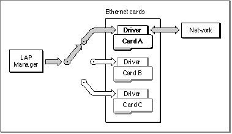

About Multivendor Network Interface Controller (NIC) Support
Before AppleTalk version 56, a networked Macintosh computer could support only
one Ethernet or token ring connection at a time. This posed a limitation for many developers who wanted multiple concurrent Ethernet or token ring connections. The original architecture also lacked support for the concurrent use of a NuBus slot device and a non-NuBus device, such as a SCSI Ethernet connection or the processor-direct
slot (PDS) device.To solve this problem, Apple implemented multivendor architecture to provide support that allows you to use different brands of Ethernet, token ring, or FDDI NuBus hardware in the same machine at the same time. For example, multivendor architecture allows a single machine to run AppleTalk over one Ethernet card (or through an Ethernet net-
work connector that uses the SCSI port) and to run another application that implements a different protocol, such as TCP/IP, over another Ethernet card at the same time.The user can select the network type to be used depending on the NuBus cards and slotless devices that are installed in the Macintosh computer. In addition to supporting various types of network hardware, multivendor architecture allows AppleTalk users to also select which brand of card to use. Your application can also provide support that allows a user to select a particular brand of card for a particular type of network connection.
Figure 11-2 shows three different brands of Ethernet cards installed in a single machine and indicates the path that data follows from the LAP Manager through the driver of the selected Ethernet card and out to the network when AppleTalk is used. The user can choose which Ethernet card is used as the network connector.
Figure 11-2 How AppleTalk uses multivendor support

To make possible the use of multiple brands of network cards, Apple provides a driver shell for each of the following types of networks:
These driver shells consist of commands that locate and load the driver software for a particular card of that network type.
- For Ethernet, the name of the driver shell is .ENET.
- For token ring, the name of the driver shell is .TOKN.
- For FDDI, the name of the driver shell is .FDDI.
The
- Note
- For configurations that are not NuBus based, such as PDS-based and SCSI-based hardware solutions, you must open and use the following drivers, not the driver shells: .ENET0 for Ethernet, .TOKN0 for token ring, .FDDI0 for FDDI.
EGetInfofunction returns information about the .ENET driver. If the Ethernet
card that you are using has a SONIC chip, you can use theEGetInfofunction to
obtain information pertaining to the SONIC-based network interface controller (NIC). Beginning with version 58 of AppleTalk, theEGetInfofunction returns this additional information. For the details regarding Ethernet cards with SONIC chips, see "EGetInfo" beginning on page 11-36.